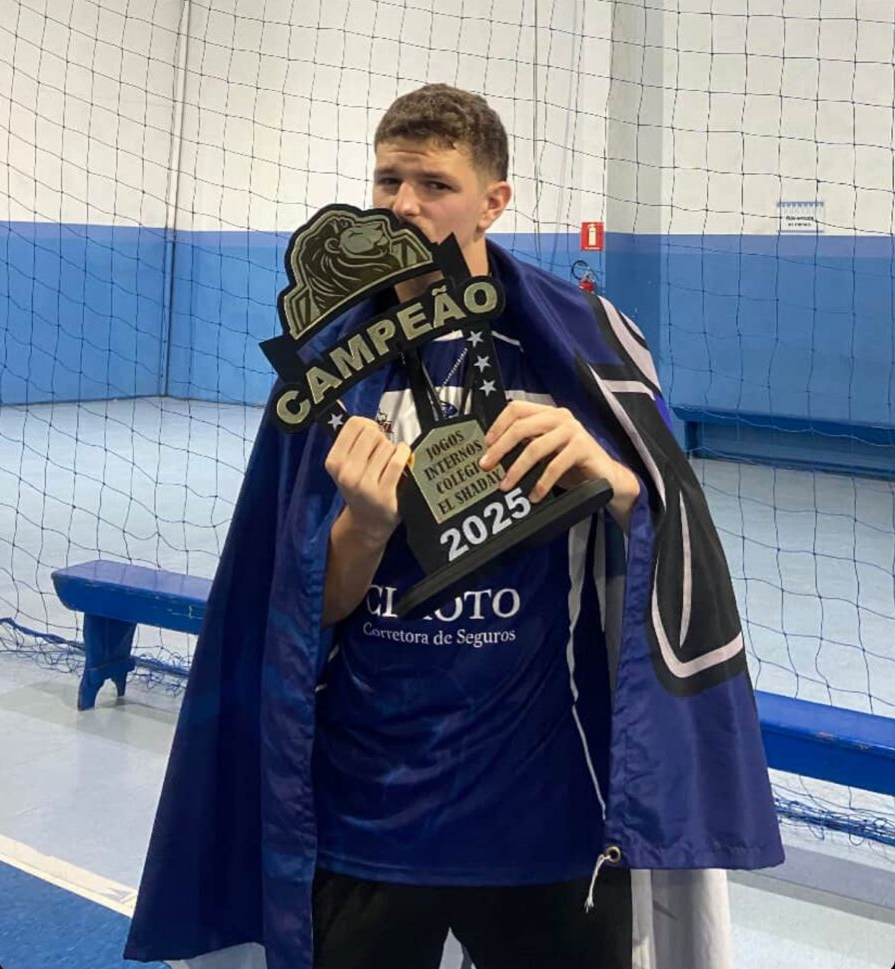
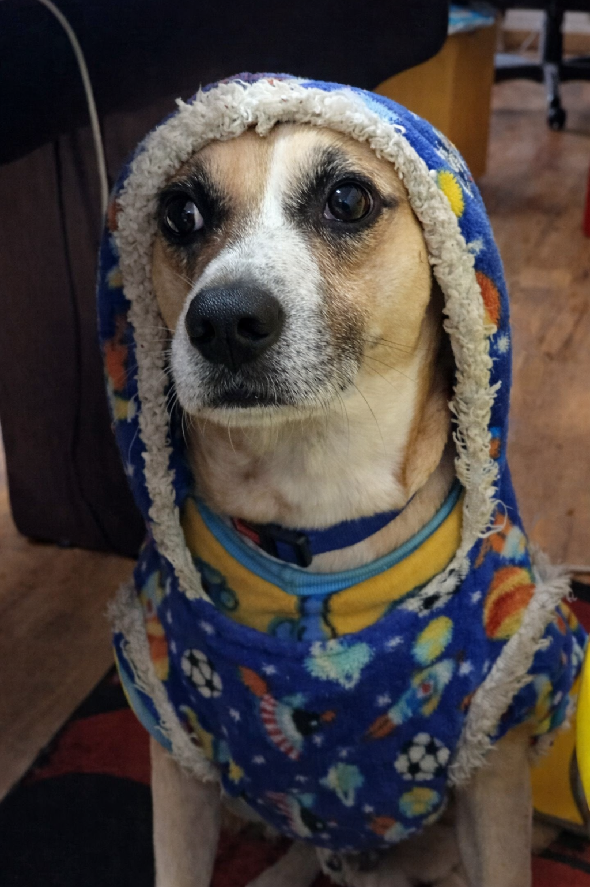
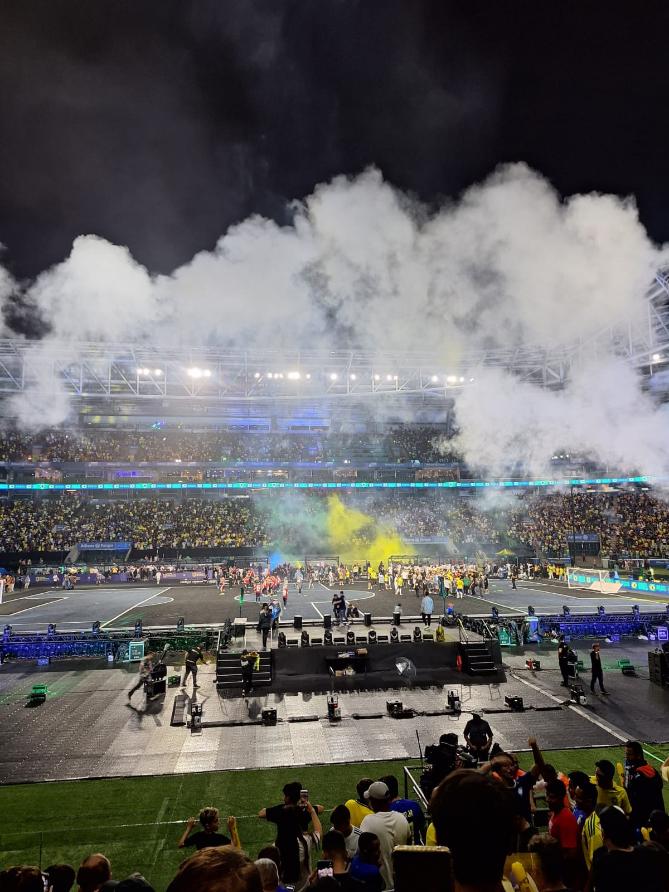

Gunter Otto Bienemann Junior é estudante por obrigação, mas programador por paixão. Conquistou uma bolsa na faculdade na base do foco, disciplina e provavelmente algumas boas noites mal dormidas.
Quando não está quebrando a cabeça com código (ou tentando entender por que o programa “não funciona"), ele divide seu tempo entre esportes — porque ninguém vive só de computador — e jogos online, onde a competitividade fala mais alto.
Seu objetivo atual? Simples: manter a bolsa, garantir um estágio na área e continuar evoluindo até virar aquele cara que resolve bug em 5 minutos enquanto os outros ainda estão reiniciando o PC.

No último ano do ensino médio, nós o 3°C — a Tropa do Rato — não era a sala favorita. Não era a mais organizada, nem a mais forte. Mas era a mais unida. Pouco antes dos interclasses, o 3°A, conhecidos como “Pecinhas”(nossos maiores rivais) e apontados como campeões gerais antes mesmo de começar, tentaram desmontar a gente: chamaram eu e o Samuel — peças importantíssimas para a sala — para mudar de turma. Seria o caminho fácil. O título praticamente garantido. O Samuel quase foi. Mas só iria se eu fosse. E foi ali que eu entendi: eu preferia perder com a minha sala do que ganhar com os pecinhas. Fiquei.
O interclasse começou com o futsal feminino. Chegamos à final. Contra quem? O 3°A. Lutamos, mas ficamos em segundo. Doeu. No dia seguinte, no vôlei, fomos até a final de novo — contra o 2°B, que já tinha eliminado a gente no ano anterior. O jogo foi decidido no “vai a 2”, ponto a ponto, coração acelerado. E, mais uma vez, segundo lugar. A sensação de bater na trave pela segunda vez seguida pesava.
Então veio o basquete. Ali era diferente. Eu, que dava a vida na quadra. O Neguin, estava voando. O Samuel jogava com alma. Ganhamos todos os jogos até a final contra o 2°B. E dessa vez não deixamos escapar. Jogamos com intensidade, raça e confiança. Quando o apito final soou, não foi só uma vitória — foi um grito preso que finalmente saiu: "CAMPEÕES". Caímos em lágrimas. Pela primeira vez, a Tropa do Rato finalmente tinha sido campeã.
Faltava só mais um passo: ganhar uma partida de futsal masculino contra o 2°A(sala fraca) e praticamente garantir o título geral. E aconteceu o inacreditável: Gols perdidos na cara, erros que nunca aconteciam… derrota. O silêncio foi pesado. Parecia que tudo tinha escapado das nossas mãos. Passamos o resto do dia fazendo contas, torcendo por resultados, tentando manter a esperança viva.
E no final, contra todas as previsões, a sala desacreditada foi campeã geral. A Tropa do Rato levantou o troféu. A sala que quase foi desmontada antes de começar venceu. E a favorita, que tentou me levar embora, ficou sem nada. Naquele dia eu entendi: Lealdade pesa mais que facilidade. E vencer ao lado de quem esteve com você desde o começo tem um gosto que nenhum “atalho” no mundo consegue oferecer.


Eu sempre tive medo de cachorro, porque os que já tive eram muito bravos. Então, pra mim, cachorro era algo para manter distância. Até que, em um dia chuvoso, o Patriota apareceu abandonado na esquina da minha casa. Pequeno, molhado e sozinho, ele só queria abrigo. Minhas tias trouxeram ele para casa, e mesmo com receio, eu comecei a me aproximar aos poucos. Ele não rosnava, não avançava — só ficava perto. Com o tempo, o medo que eu tinha virou carinho.
Hoje, o Patri não é só um cachorro que apareceu por acaso; ele é meu companheiro de todas as horas, o que me espera chegar e que mudou completamente a forma como eu vejo os animais. O que começou em um dia cinza virou uma das melhores coisas da minha vida.

Ir ao Allianz Parque na final da Kings League World Cup, Brasil e Chile, foi incrível. O estádio estava lotado, a energia era absurda, e o Brasil goleou por 6 a 2. Ver cada gol de perto, a torcida explodindo, foi uma sensação única. Além do jogo teve o show do MC PH, MC Marks e do DJ Japa NK. Depois, ainda fiquei pensando no jogo o resto do dia, porque cada momento ficou gravado na memória.
@sofunkdahora Brabo demais! 👏
♬ Amo Minha Favela - Mc Meno K & Dj Japa NK
@sofunkdahora Foi um espetáculo!! 👏✨
♬ Os Menino Tá Com o Pacote - Mc PH & Murillo e LT no Beat & Solanno & 011Frank